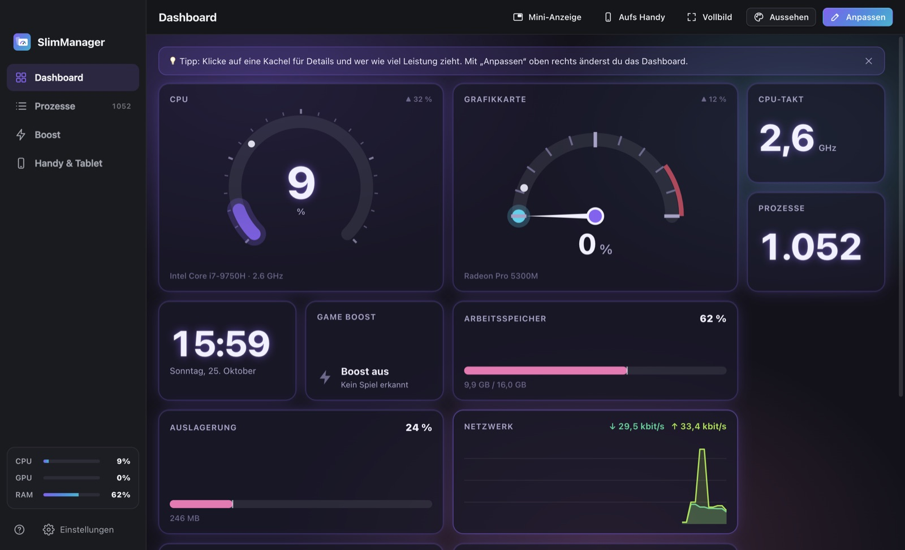
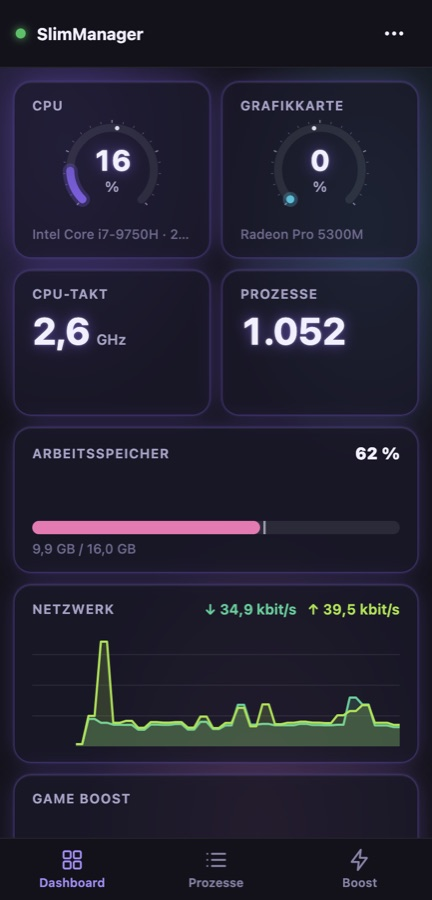

Dein Handy als Präsentations-Fernbedienung.
QR-Code scannen und los – keine App auf dem Handy nötig. Folien wechseln, Laserpointer, Vorschau und Timer. Für PowerPoint, Keynote, Google Slides und PDF. Kostenlos.
Herunterladen

So installierst du es unter Windows
Herunterladen
Klicke oben auf „Herunterladen“. Die Datei SlimClick-Setup.exe landet in deinem Download-Ordner.
Doppelklicken
Öffne die Datei mit Doppelklick. Die Installation läuft von selbst – du musst nichts auswählen.
„Zugriff zulassen“
Beim ersten Start fragt die Windows-Firewall, ob SlimClick ins Netzwerk darf. Klicke auf „Zugriff zulassen“ – sonst findet dein Handy den Laptop nicht.
- Klicke auf den Text „Weitere Informationen“.
- Klicke auf „Trotzdem ausführen“.
So installierst du es auf dem Mac
Herunterladen & öffnen
Klicke oben auf „Herunterladen“ und öffne dann SlimClick-Mac.dmg aus deinem Download-Ordner.
In „Programme“ ziehen
Ziehe das SlimClick-Symbol auf den Ordner „Programme“ daneben. Dann aus „Programme“ starten.
Zwei Erlaubnisse
Die App führt dich hin: Bedienungshilfen (zum Weiterschalten, Pflicht) und Bildschirmaufnahme (für die Vorschau, freiwillig).
- Klicke auf „Fertig“ (nicht „In den Papierkorb“).
- Öffne Systemeinstellungen → Datenschutz & Sicherheit und scrolle ganz nach unten.
- Klicke bei „SlimClick wurde blockiert“ auf „Dennoch öffnen“ und bestätige mit deinem Passwort.
Häufige Fragen
Wie nutze ich mein Handy als Präsentations-Fernbedienung, ohne App?
Installiere SlimClick kostenlos auf deinem Laptop (Windows oder Mac). Es zeigt einen QR-Code. Scanne ihn mit der Handy-Kamera – es öffnet sich eine Webseite, die deine Folien steuert. Auf dem Handy wird nichts installiert.
Funktioniert es mit PowerPoint, Keynote, Google Slides und PDF?
Ja. SlimClick drückt dieselben Tasten wie ein normaler Presenter (Pfeiltasten). Damit klappt es mit allen Programmen, die darauf reagieren: PowerPoint, Keynote, Google Slides, LibreOffice Impress, Canva und PDF-Programme im Vollbild.
Mein Schul-WLAN blockiert die Verbindung. Was tun?
Viele Schul- und Firmennetze trennen Geräte voneinander. Schalte den Hotspot deines Handys ein und verbinde den Laptop damit. SlimClick passt den QR-Code von selbst an. Die Verbindung zwischen Handy und Laptop verbraucht kein Datenvolumen.
Kann jemand anderes im Raum mitsteuern?
Nein. Der QR-Code enthält einen geheimen Einmal-Schlüssel, der nie übers Netz geschickt wird. Jeder Befehl ist signiert. Ist schon ein Handy verbunden, musst du jedes weitere Gerät am Laptop zulassen.
Hat SlimClick einen Vortrags-Timer?
Ja. Countdown oder Stoppuhr direkt am Handy. Bei 5, 2 und 1 Minute Restzeit blinkt der Handy-Bildschirm kurz gelb, am Ende rot – unauffällig fürs Publikum.
Gibt es einen Laserpointer?
Ja. Tippe am Handy auf „Laser“ und dann auf die Folienvorschau – der rote Punkt erscheint genau dort auf dem Beamer. Mit „Spotlight“ bleibt nur eine Stelle hell.
Brauche ich Internet oder ein Konto?
Nein. Handy und Laptop verbinden sich direkt im WLAN oder über den Handy-Hotspot. Kein Konto, keine Cloud, kein Datenvolumen.
Ist SlimClick eine kostenlose Alternative zu einem Presenter?
Ja. Statt eines gekauften Presenters (Clicker) nimmst du einfach dein Handy – mit Extras, die viele Presenter nicht haben: Folienvorschau, Gehe-zu-Folie und Timer.
Ist SlimClick kostenlos?
Ja. Komplett kostenlos – ohne Werbung, ohne Konto, ohne Abo und ohne Datensammlung.